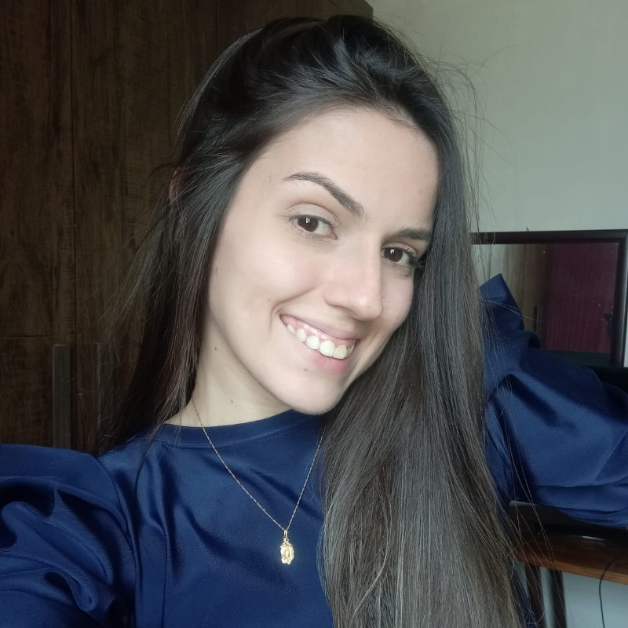

Fernanda Werneque de Oliveira Maximiano
Rua Manoel de Almeida Lacerda, 30, Cohab Nova, Leopoldina-MG 
(32) 99138-6759 | fernandawerneque@hotmail.com | linkedin.com/in/fernandawerneque
Educação
7º PERÍODO | CENTRO FEDERAL DE EDUCAÇÃO TECNOLÓGICA DE MINAS GERAIS
-Bacharelado Engenharia de Controle e Automação
BÁSICO E INTERMEDIÁRIO | CENTRO CULTURAL DE IDIOMAS - CCI
-Inglês - CCI Leopoldina - 2006-2008/2018 - Atualmente.
Habilidades e Conhecimentos
|
LINGUAGENS |
SOFTWARES |
| BÁSICO |
Java e JavaScript |
Arduino |
| INTERMEDIÁRIO |
C |
Pacote Office |
Experiência Profissional
- Não possui experiência profissional.
Atividades Extracurriculares
CENTRO FEDERAL DE EDUCAÇÃO TECNOLÓGICA DE MINAS GERAIS | COORDENADORA ADJUNTA DE MARKETING - CREA JR.-MG - 12/2019 - ATUALMENTE
- Atua na criação de artes para as redes sociais e na divulgação de eventos desenvolvidos pelo Crea-Minas Júnior Núcleo Leopoldina e de instituições e afins.
Responsável por garantir a comunicação, a disseminação da cultura e a informação interna e externa.
CENTRO FEDERAL DE EDUCAÇÃO TECNOLÓGICA DE MINAS GERAIS | BOLSISTA - PROJETO DE EXTENSÃO EDUCAÇÃO PARA UM MUNDO MAIS MAKER - 12/2020 - ATUALMENTE
- Responsável por preparar e ministrar as atividades de iniciação tecnológica (cursos,oficinas e hackatons) em sintonia com as orientações do coordenador do projeto.
CENTRO FEDERAL DE EDUCAÇÃO TECNOLÓGICA DE MINAS GERAIS | VOLUNTÁRIA - PROJETO DE EXTENSÃO MUNDO MAKER - FASE 2 - 05/2020 - 12/2020
- Responsável por confeccionar materiais de apoio aos ministrantes do curso;
- Divulgação dos cursos e eventos;
- Montagem de planilhas com os materiais utilizados durante o curso Maker em Casa.